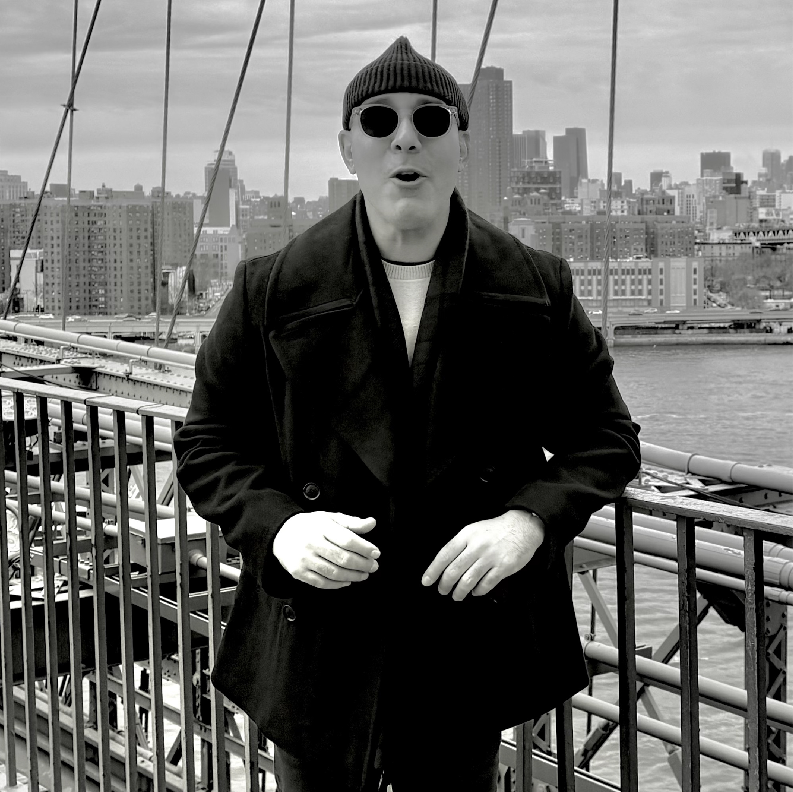
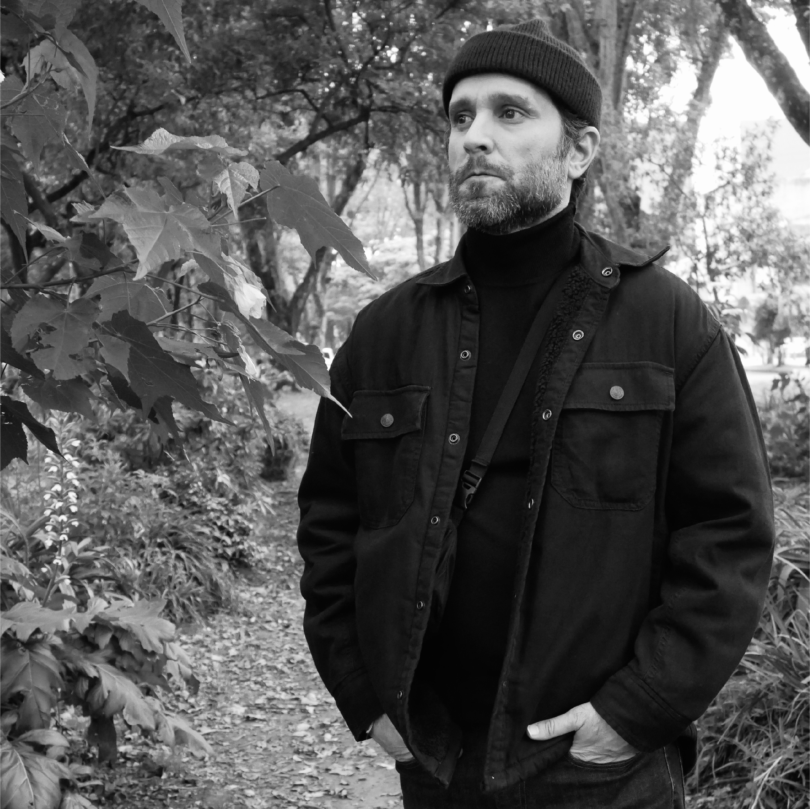

Our mission is to provide our clients with exceptional quality design solutions that are both strategic and visually compelling.
Partners

Jose A. Rodríguez Dushesne
Founder & Managing Partner
Seattle, Washington
With over twelve years of experience in graphic design, José specializes in design business and ethics. Throughout his career, he has developed expertise in strategic thinking and creative workflow management, leading initiatives for clients ranging from startups to global brands. His contributions span both corporate and cultural sectors, collaborating with renowned brands, projects, and institutions such as American Express, Tequila Ocho, Widow Jane, Mezcal Vago, Cuttica Foundation, DD-Diseño, and DYAD, among others. José is currently based in Seattle, Washington, where he works remotely. Outside the studio, he is a golf enthusiast, a retired U.S. Navy veteran, and continues his formation as an arts leader pursuing an MFA in Arts Leadership at Seattle University.

Luis A. Díaz-Alejandro
Partner & Design Director
Bogotá, Colombia
With over 20 years of experience in graphic design, Luis has specialized in creating brands and visual identities across both cultural and commercial sectors. Throughout his career, he has made a significant impact in the cultural space, crafting visual identities for projects and institutions such as the Institute of Puerto Rican Culture, the Museum of Contemporary Art of Puerto Rico, and MECA Art Fair, among many others. On the commercial spectrum, he has developed branding for companies, professional practices, restaurants, and hotels. Luis is currently based in Bogotá, Colombia, where he works remotely. Outside the studio, he enjoys music—especially jazz, salsa, hip-hop, and other Afro-Caribbean genres, and remains committed to supporting independent cultural projects.
Magdiel Ortiz
Partner & Design Director
Miami, Florida
With over 15 years of experience in graphic design, Magdiel specializes in creating brands and visual identities across analog and digital mediums often exploring where the two intersect. studied at SVA (School of Visual Arts) in New York City where he received a BFA and a minor in Art History. He began his career at Pentagram’s New York office, working under partner Luke Hayman working for clients including Mastercard, Columbia University, Netflix, Rolling Stone, among others. Magdiel is currently based in Miami, Florida, where he works remotely. Outside the studio, he enjoys spending his time by the water whether at the beach or out on a boat, and continues his practice as Smithsonian Museum’s Experience Design Manager.